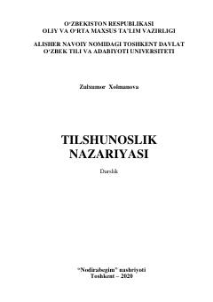

TNTilshunoslik nazariyasining asosiy masalalari va lingvistik tahlil metodlarini yorituvchi o‘quv qo‘llanma.
Ushbu darslik filologiya yo‘nalishidagi talabalar uchun mo‘ljallangan bo‘lib, tilning mohiyati, til va jamiyat munosabati, lingvistik tahlil metodlari hamda tilshunoslikning nazariy asoslarini qamrab oladi. Kitobda tilning ijtimoiy, fiziologik va psixik tabiati zamonaviy xorijiy va milliy manbalar asosida tahlil qilingan.